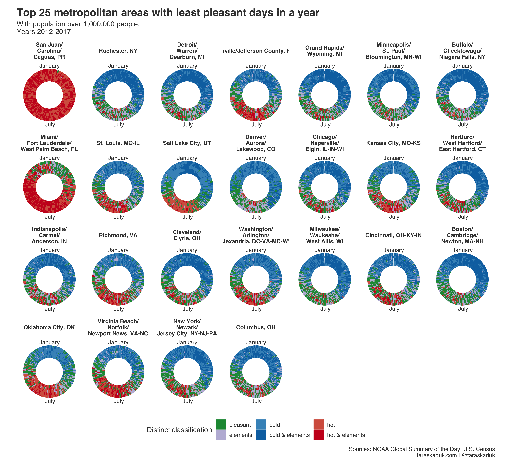

Introduction
In my life, I have moved around a bit, and I always think about my next stop. There is a host of factors to consider, and I’ve seen quite a few great online tools that, for example, help you determine your ideal country based on your political views, preferences and other factors. But what about a domestic move? With a country as large and diverse as the United States, there are many places here that are quite different from one another.
About a year ago or so, I saw a post called “The Pleasant Places to Live” (Norton 2014) showing the locations by the amount of pleasant days in a year.1 My thinking along these lines is that weather is an important factor in determining where to live. Given the weather data for cities of interest, one could define what “pleasant” weather is, and rank the locations according to such weather “pleasantness”.
Methodology
After testing quite a few different approaches, I settled on the same data source used by Norton: NOAA’s Global Summary Of The Day database (DOC/NOAA/NESDIS/NCDC > National Climatic Data Center, NESDIS, NOAA, U.S. Department of Commerce n.d.). I extracted years 2012 through 2017 for all US-based weather stations, cleaned it up, filtered it out, did some averaging and fitted a linear regression for every location based on year and day of the year to fill in several missing values.
I then applied this data to 929 metropolitan and micropolitan statistical areas.
Using the idea of counting pleasant days as the approach in measuring weather from sources cited above, I followed the same method. Determining ideal weather conditions is both subjective and depends on other conditions, such as setting (indoor or outdoor), activity (working, sleeping etc.) and other factors.2345678 While some studies have been performed on optimal temperature setting for some specific context (Wei et al. 2017), the overall question remains inherently subjective and arbitrary.
Realizing full subjectivity of the parameters set below, my definition of a pleasant (or nice) day is that of a day when:
- the max temperature was under 32°C but above 16°C
- the min temperature was above 4°C but under 21°C
- the mean temperature was between 13°C and 24°C
- no significant rain or snow
Results
Overall map
While not within the scope of this analysis, I had some world data that I visualized while working on the article:
Sneak peak: places with most (and least) pleasant days in a year. Average of 4 years of daily data from ~29,000 @NOAA weather stations. Originally inspired by @kellegous's USA map (https://t.co/mlrmYV9NjA). Blog post coming up.#rstats #ggplot #tidyverse pic.twitter.com/8PCpRbQyvw
— Taras Kaduk (@taraskaduk) June 19, 2018
Specific to the United States, the map shows that areas of most pleasant weather include the West Coast and Florida.

50 best and worst
Moving on to the rankings. Below is the chart design I settled on. Each chart shows 50 metropolitan and/or micropolitan areas, ranked by their average amount of pleasant days in years 2012-2017. The year 2017 is displayed for each area as a tile chart: months on y-axis, days of the month on x-axis. Areas are sorted according to the chart: from most to least in “most pleasant days”, and from least to most in “least pleasant days”: the most winner or loser is always on top
Top 50 best, all metropolitan and micropolitan
This is top 50 out of all areas for which there is data. Nothing surprising at the top, with California leading the way. Tennessee was a bit of a surprise to me (these smaller towns also don’t seem to report a lot or any rain, which is suspicious). Also, it changed my frame of reference about Florida a bit: I live here now, and I consider it unpleasant (because it is very hot in the summer), but I must agree that our winters are very nice, and it looks like we’ve got it good compared to the rest of the country.
 [Full-size vertical version] | [Full-size horizontal version]
[Full-size vertical version] | [Full-size horizontal version]
Top 50 worst, all metropolitan and micropolitan
In the “worst” section, we see all the usual suspects: Wyoming, Alaska, Montana, North Dakota. Also, Puerto Rico and Key West, FL are the only places that are too hot: the rest is too cold. 
Top 50 best metro areas
Micropolitan areas are not always on everyone’s mind, and therefore I wanted to look at metro areas specifically. No surprise here either, with California and Florida having the 2/3 of top 50 metro areas. The first non-California metro area is Serbing, FL, 11th in the rank. 
Top 50 worst metro areas
Over on the other side, not so pleasant places still include Puerto Rico and the Northern USA, but now we see a lot more of Eastern Washington and Oregon, along with that cold Northeast.

Top 25 best and worst metro areas with population over 1,000,000 people
Finally, I ranked the biggest metro areas - the ones with the population over 1 million - in the same way. Here are 25 best and worst metro areas with over 1,000,000 people. This time, I used a different design, displaying all 6 years per metro area as “tree rings”, using polar coordinates


Discussion
I feel very good about letting these imperfect charts out into the wild. Mostly, I feel liberated to be able to move on and do other things. Funny enough, one of these “other things” is to re-do this analysis, but keep it simpler and rely on existing packages rather than reinventing the wheel. Why re-do? Well, I still want to work on this project “Best place to live”, and weather is one important metric out of many. But this time around, I won’t need all the precision, all the complexity, all the ggplot wizardry: I’ll just accept a simple and somewhat imperfect metric as a proxy, as it will be one of many other numbers. So, stay tuned!
Update 2019-12-01
This post has been referenced or credited on the following pages:
- DIGG.com: https://digg.com/2019/top-25-cities-most-pleasant-days-data-viz
- CBS13 Sacramento: https://gooddaysacramento.cbslocal.com/2019/04/30/sacramento-pleasant-weather/
- Revolutions Analytics: https://blog.revolutionanalytics.com/2019/03/best-and-worst-weather.html
- Reddit:
- Visualization of mean daily temperatures over the past five full years for 12 Canadian cities: https://www.reddit.com/r/dataisbeautiful/comments/b6qle0/visualization_of_mean_daily_temperatures_over_the/
- Mean daily temperatures over the past 5 years for Ottawa and 11 other Canadian cities: https://www.reddit.com/r/ottawa/comments/b6vupb/mean_daily_temperatures_over_the_past_5_years_for/
My own submission at r/dataisbeautiful: https://www.reddit.com/r/dataisbeautiful/comments/byjies/top_25_world_cities_with_most_pleasant_days_in_a/
Brettschneider, Brian. 2018. “What Cities Have the Most Nice Days in America?” Washington Post, August. https://www.washingtonpost.com/news/capital-weather-gang/wp/2018/08/07/the-united-states-of-nice-days-heres-where-and-when-to-find-the-nations-most-frequent-ideal-weather/.
DOC/NOAA/NESDIS/NCDC > National Climatic Data Center, NESDIS, NOAA, U.S. Department of Commerce. n.d. “Global Surface Summary of the Day - GSOD.” DOC/NOAA/NESDIS/NCDC > National Climatic Data Center, NESDIS, NOAA, U.S. Department of Commerce. Accessed February 18, 2019. https://data.noaa.gov/dataset/dataset/global-surface-summary-of-the-day-gsod.
Norton, Kelly. 2014. “The Pleasant Places to Live.” February 3, 2014. https://kellegous.com/j/2014/02/03/pleasant-places/.
Wei, Wenqi, Jackson G. Lu, Adam D. Galinsky, Han Wu, Samuel D. Gosling, Peter J. Rentfrow, Wenjie Yuan, et al. 2017. “Regional Ambient Temperature Is Associated with Human Personality.” Nature Human Behaviour 1 (12): 890–95. https://doi.org/10.1038/s41562-017-0240-0.
After concluding my analysis, I found a similar article in Washington Post, centered around the same concept of pleasant days (Brettschneider 2018). There was no reference to the 2014 article by Norton↩︎
https://www.reddit.com/r/askscience/comments/ulxdg/what_is_the_ideal_temperature_of_surroundings_for/↩︎
https://www.scientificamerican.com/article/why-people-feel-hot/↩︎
https://www.city-data.com/forum/general-u-s/54730-what-your-ideal-outdoor-temperature-4.html↩︎
https://health.clevelandclinic.org/what-is-the-ideal-sleeping-temperature-for-my-bedroom/↩︎
https://www.outsideonline.com/1784591/whats-best-temperature-productivity↩︎